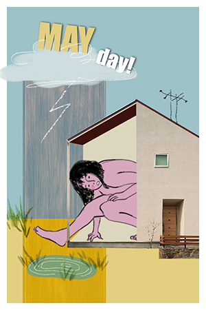

Home Photoshop Illustrator Animate Print Layout Contact

Photoshop was the first project we did in VMD 105. I made a photo collage and I incorporated a drawing of the girl in the house, which I did on a tablet. I had a lot of fun working with layer blending modes and masking layers.